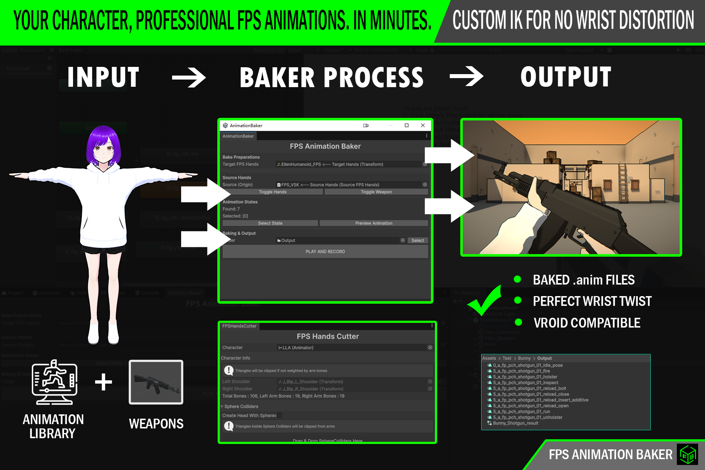

A specialized tool built for solo developers and small indie teams to bridge the gap between character assets and solid first-person animations. Stop manually editing meshes and start baking movements directly inside Unity.
"This workflow of baking various animations onto a custom arm rig is a solution I have developed and refined over many years of use. I have now decided to release this methodology as a dedicated plugin to help independent creators rapidly produce quality FPS assets without needing a massive team."
Core Plugin: Now available on the Unity Asset Store. A must-have for small teams managing their own animation pipelines.
View on Unity Asset StoreThis extension is strongly recommended for all users as it includes pre-configured support and data for the Low Poly Shooter Pack.
LPSP Demo Project: A ready-to-use Unity pack that integrates all LPSP animations, allowing you to bake them onto your custom characters immediately.
Essential: Provides all animation data needed for Low Poly Shooter Pack compatibility.
Or clone via Git: https://github.com/ryanflees/FPSAnimationBaker_Extension.git
A deep dive into FPS system mechanics and logic. Recommended for solo and small-team developers looking to understand the core architecture behind efficient FPS systems.
📺 FPS System Breakdown & Analysis